{kind=link}
View 01
Primary artifact view.
Artifact record and analysis
Type / Pattern: United States Navy Officer Sword, Model 1852
Approx. Date: Mid to late 19th century
Origin: United States – regulation naval officer pattern
Current Status: Private collection (Historical Sword Society)
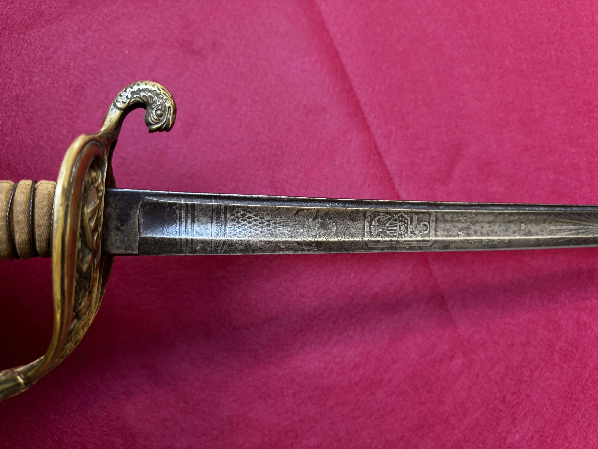
Abstract: The Model 1852 U.S. Navy Officer Sword represents one of the longest-serving edged weapon patterns in American military history. Designed primarily as a symbol of rank, authority, and naval tradition, the sword reflects mid-19th-century influences in both form and ornamentation. While largely ceremonial in its later use, the pattern retains functional characteristics rooted in earlier combat sabers, including a curved blade optimized for draw cuts. Its enduring presence underscores the importance of visual command identity and continuity within the United States Navy.
Detailed photographs documenting the sword’s full profile, hilt, guard, blade form, markings, and condition.
Primary artifact view.

Alternate angle.
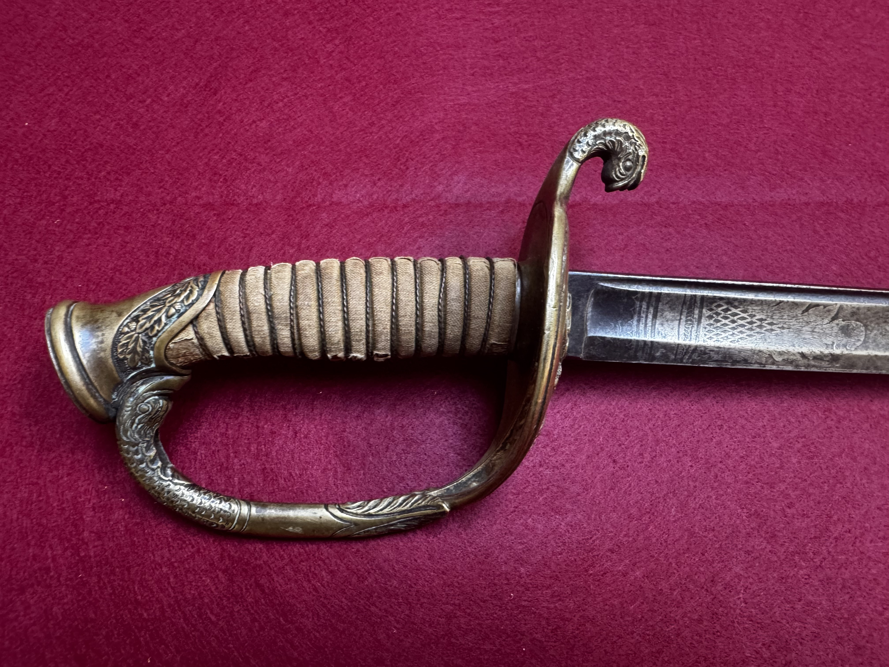
Full-length profile.
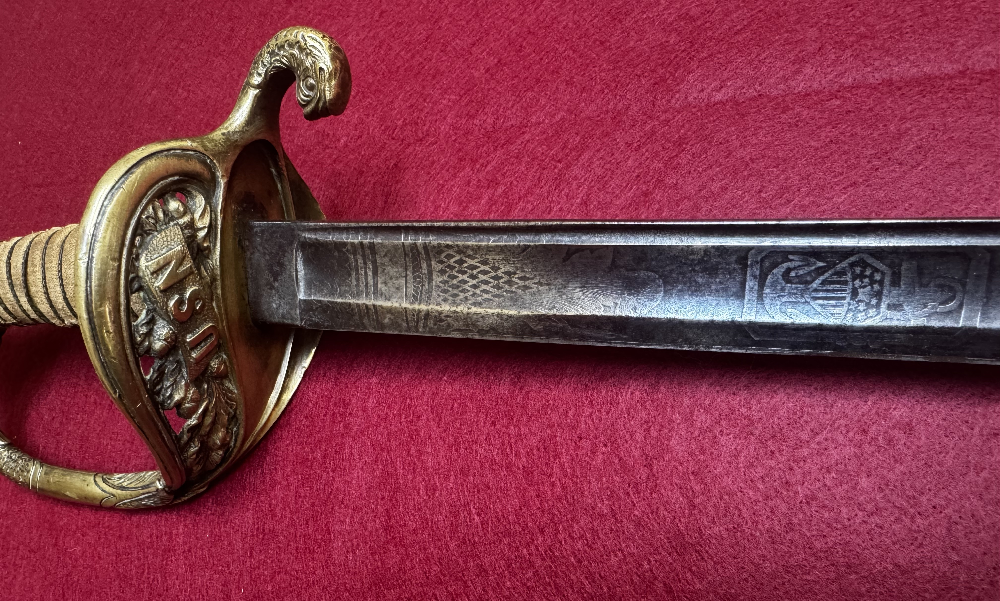
Blade curvature.

Hilt overview.
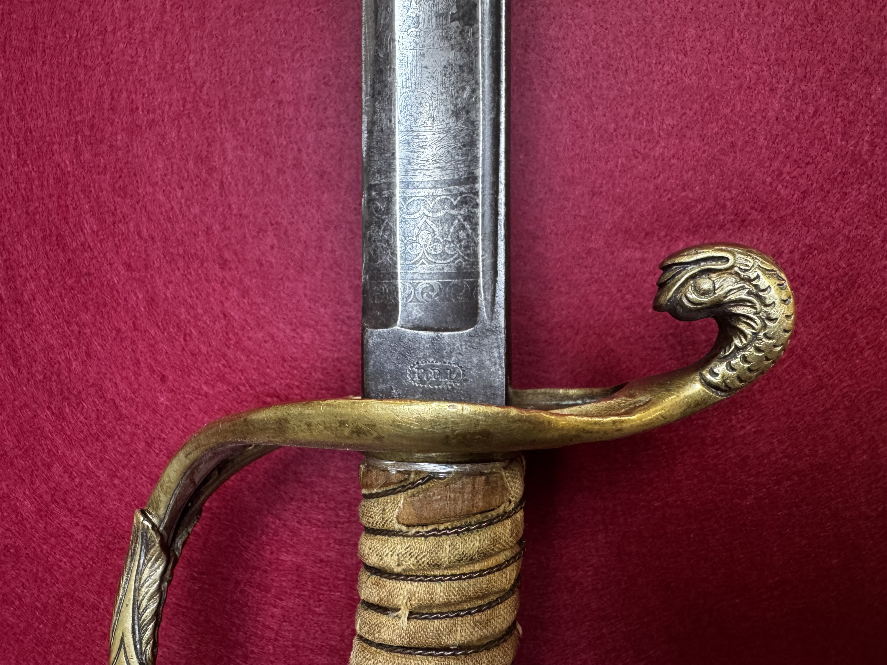
Guard detail.
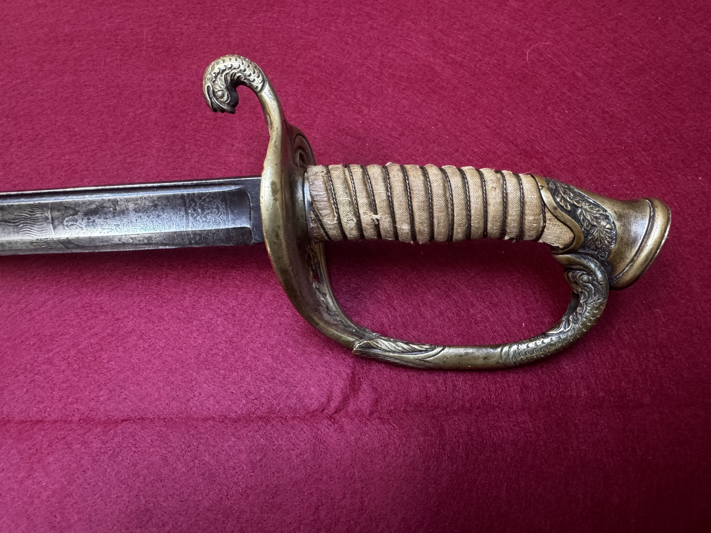
Grip detail.
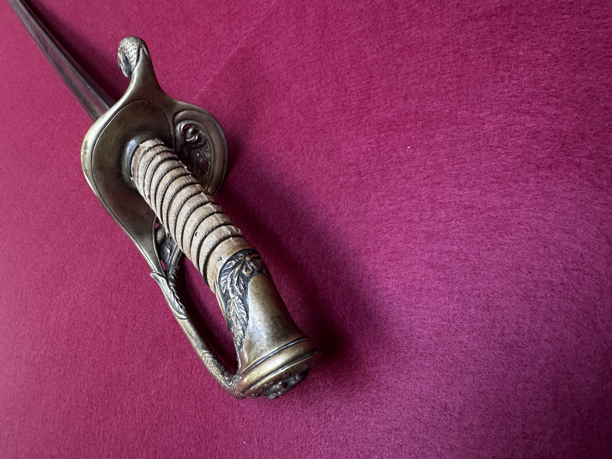
Pommel detail.
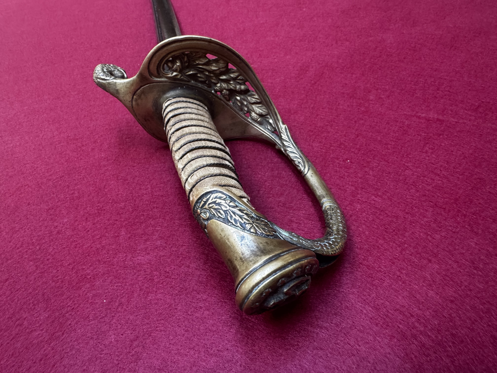
Blade etching.
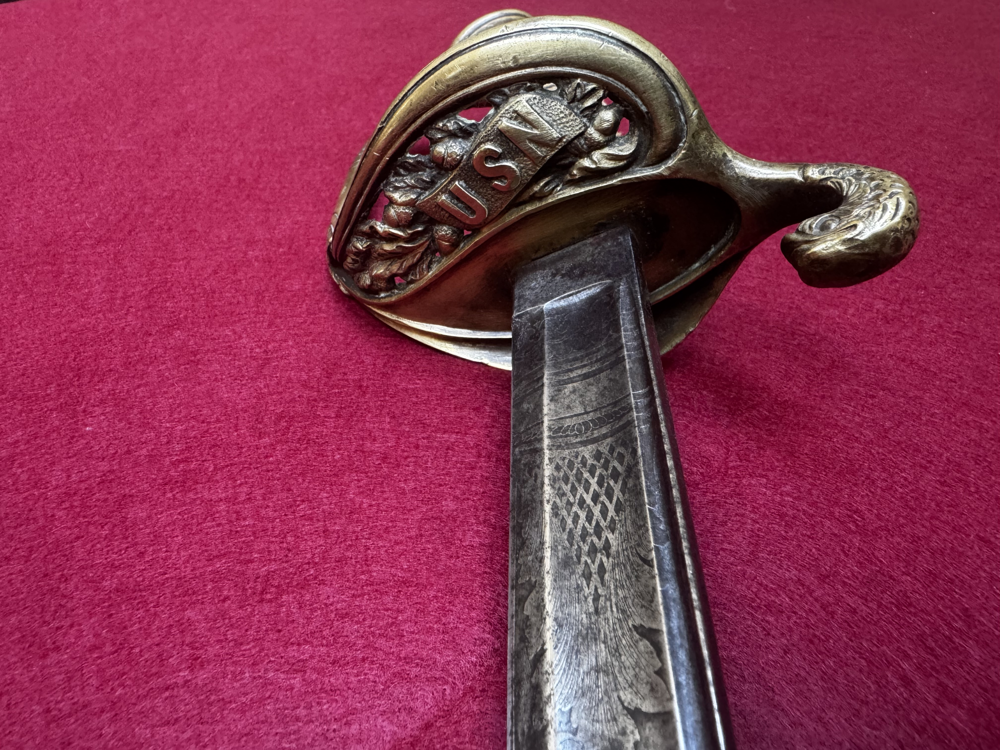
Ricasso and markings.
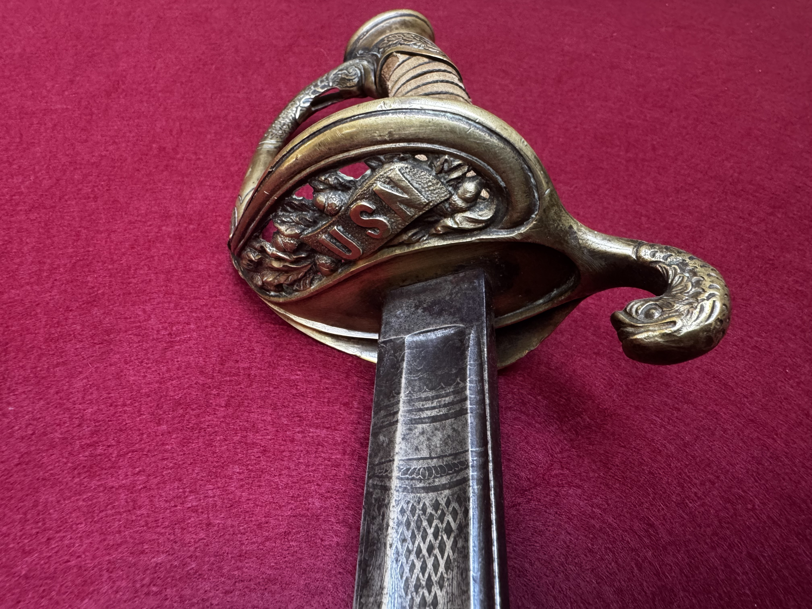
Spine detail.

Scabbard overview.

Scabbard fittings.

Drag detail.
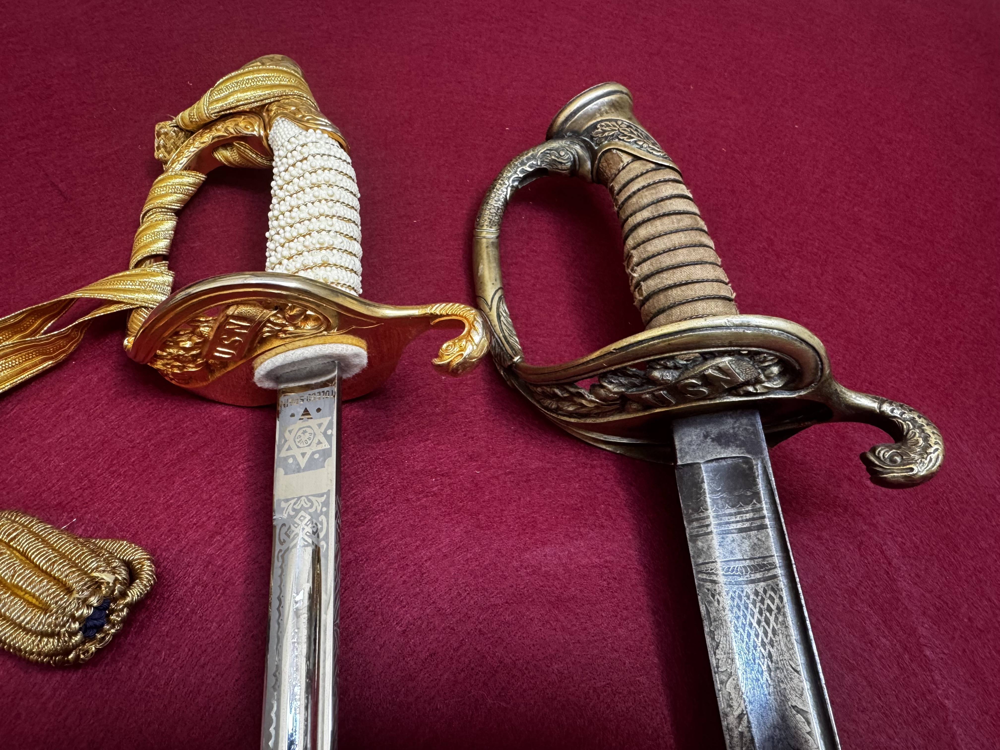
Close-up detail.
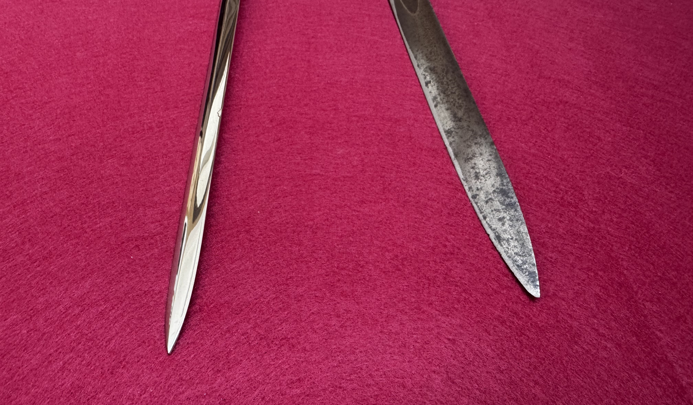
Condition detail.

Additional reference view.
| Overall length | [mm / in] |
| Blade length | [mm / in] |
| Blade width (at ricasso) | [mm / in] |
| Blade thickness (at ricasso) | [mm / in] |
| Point of balance | [mm / in from guard] |
| Weight | [g / lb] |
| Fullers | [description] |
| Edge geometry | [description] |
| Hilt material | [brass / steel / etc.] |
| Grip | [wood/leather/wire/etc.] |
| Scabbard | [present/absent; material; markings] |
Observed markings: [List spine, ricasso, guard, scabbard marks]
Interpretation: [Arsenal/manufacturer, inspector marks, unit marks, export marks]
Identification basis: [Pattern features, dimensions, comparison references]
References: Add citations to books, catalogs, museum collections, or archival documents.
[List acquisition details, prior owners (if known), dealer notes, and supporting documentation.]
{kind=link}
{kind=link}
{kind=link}
{kind=link}
{kind=link}
{kind=link}
{kind=link}
{kind=link}
{kind=link}
{kind=link}